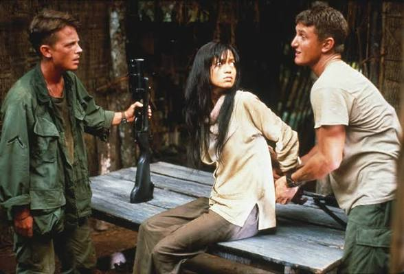

🪖 CASUALTIES OF WAR (1989) — CERTIFIED MGC AU-57

🏛 MGC LOWER COURT DOCKET
- ASSET TITLE: Casualties of War (1989) – The Hill 192 Historical Trauma Ledger
- OFFICIAL REGISTRY GRADE: Certified MGC AU-57 (About Uncirculated / High-End Strike)
- LOWER COURT JURISDICTION: Lower Tribunal Room / Historical Conflict Docket
- PRESIDING PANEL: Judge Dex, Chief of R&D, Chief Grader MGC, and Chief Justice MGC
- CASE FILE: #045
📜 THE FORENSIC NARRATIVE BREAKDOWN & Luster Log
The Movie Grading Consensus (MGC) platform maintains an absolute preference for true stories. True history brings forth intricate, raw, and unrepeatable story structures that the world’s greatest fictional screenwriters could never dream up in a million lifetimes. Because of this built-in premium luster, true stories usually secure a direct, unchallenged path straight into the Mint State (MS) Vaults. However, under our strict objective lens, a combination of heavy atmospheric friction and distinct Hollywood planchet scuffs permanently bar this tragic coin from entering the pristine upper galleries. Casualties of War falls just short of Mint State, settling into a high-end About Uncirculated grade due to specific thematic and structural flaws:
🚨 Key Planchet Flaws:
1. The Depressing Narrative Friction
- The film’s pitch-black, morally devastating atmosphere on Hill 192 creates heavy emotional drag, limiting its repeat-viewing appeal and capping its eye-appeal grade.
2. Hollywood Action Scuffs
- A third-act railway trestle sequence relies on conventional, over-dramatized action tropes that temporarily fracture the grounded, true-story alloy.
3. Tribunal Pacing Bottlenecks
- The transition into military legal proceedings and bureaucratic structures slows the film’s linear velocity in its final act.
🚨 The Three Judicial Motions Under Review:
1. The Depressing Narrative Friction: SUSTAINED.
-
The Verdict:
The pitch-black, morally devastating, and heartbreaking nature of the central historical crime on Hill 192 creates an intense, unavoidable emotional drag. While it stands as a magnificent, elite piece of filmmaking with an incredible performance strike by Michael J. Fox and Sean Penn, the raw trauma of the narrative permanently stains its repeatable, casual entertainment luster. It acts as a heavy circulation wear block, capping its eye-appeal grade.
2. The Hollywood Action Scuffs: SUSTAINED.
-
The Verdict:
The film damages its own uncirculated historical gravity during the third-act railway trestle sequence. Forcing the platoon sergeant to blast away at Eriksson like a conventional, over-dramatized studio action villain shatters the grounded realism of the actual 1966 incident, leaving deep handling scratches on a coin that should have remained structurally pure.
3. The Military Tribunal Transition: OVERRULED.
-
The Verdict:
The initial technical objections regarding a late-stage pacing bottleneck during the military legal proceedings are completely thrown out. The High Court rules that the transition into the military court system does not stall the film’s linear velocity—it injects pure, necessary moral justice back into the alloy! After surviving an absolute psychological nightmare in the jungle, watching the command structure step in and officially strip the corrupt platoon members of their rank and freedom provides a powerful, high-contrast emotional payoff that beautifully anchors the coin’s structural high points.
⚖️ Final Court Decree
- While the Supreme Panel overrules the pacing objections based on the strength of the courtroom justice sequence, the crushing emotional weight of the true story and the flashy Hollywood train-track scuffs keep the coin sealed just outside the uncirculated vaults. It stands proudly as a monumental, deeply important milestone on our shelves.
- Permanently sealed in the historical archives as a Certified MGC AU-57 Specimen. Case Closed. 🥈🪖 Track Justice Locked. 🛤️⚖️

• © 2026 MOVIE GRADING CONSENSUS. All Sovereign Rights Reserved.